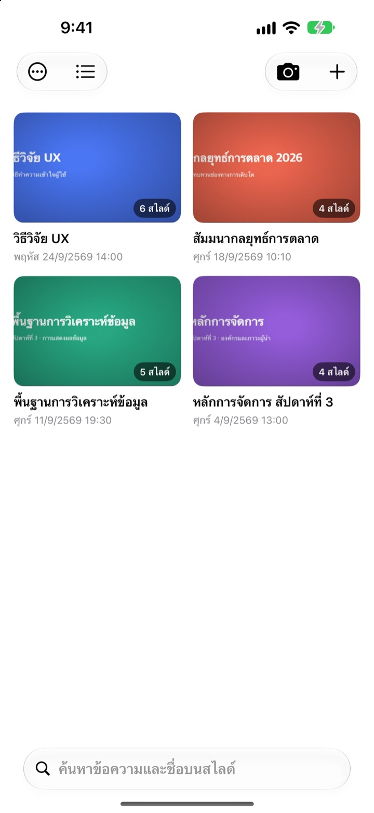
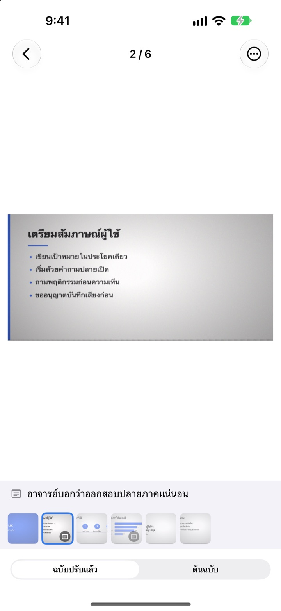
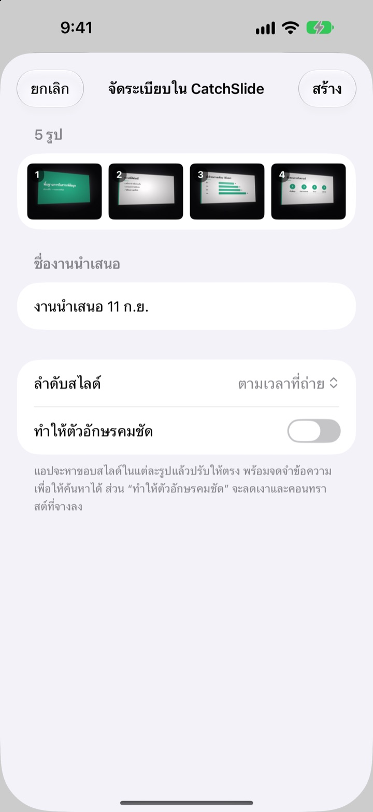
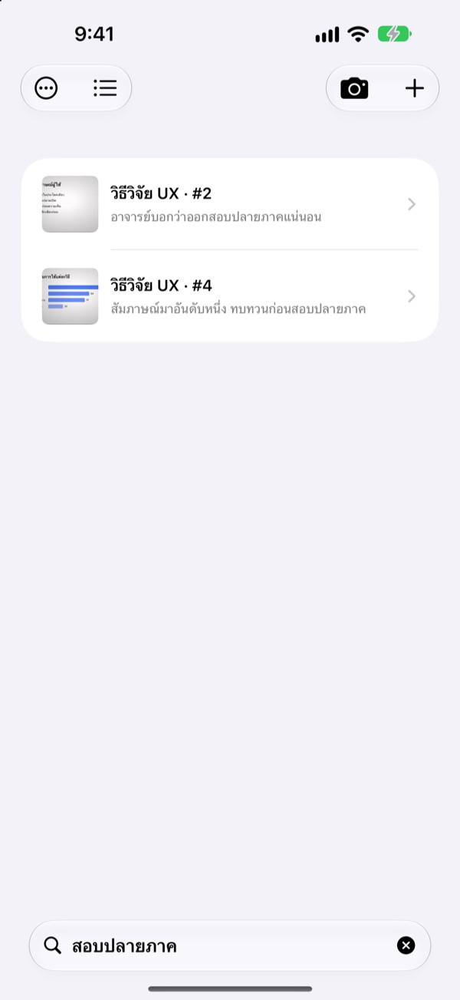

ถ่ายจากด้านข้าง
ได้ภาพเหมือนนั่งตรงหน้า
กล้องจะหามุมทั้งสี่ของสไลด์ ดัดภาพให้ตรง และตัดพื้นหลังรอบๆ ออก สไลด์ที่ถ่ายต่อกันจะรวมอยู่ในงานนำเสนอเดียวกัน
ซื้อครั้งเดียว ใช้ได้ทุกฟีเจอร์ ไม่มีการสมัครสมาชิก ไม่ต้องมีบัญชี

ลองดัดภาพเอง
ภาพนี้ถ่ายเอียงจากที่นั่งด้านข้างของห้องเรียน เส้นสีเขียวคือตำแหน่งมุมของสไลด์ที่หาเจอ
เคยเปิดคลังรูปเพื่อทบทวน แต่หาสไลด์ไม่เจอไหม
สไลด์ที่ถ่ายจากแถวหลังมักจะเอียง แล้วก็ปนอยู่กับเซลฟี่และใบเสร็จ ในห้องเรียนที่เงียบ แค่เสียงชัตเตอร์ก็ทำให้ลังเลจะถ่ายแล้ว CatchSlide ถ่ายแบบไม่มีเสียง ดัดสไลด์ทุกภาพให้ตรง และเก็บรวมกันตามงานนำเสนอ
ตรงตั้งแต่ตอนถ่าย
กล้องจับมุมทั้งสี่ของสไลด์แบบเรียลไทม์และเปลี่ยนเป็นสีเขียวเมื่อจับได้ ถึงจะถ่ายเอียงก็ได้ภาพเหมือนถ่ายจากด้านหน้า พร้อมตัดพื้นหลังออก
ไม่มีเสียงชัตเตอร์ เปิด ถ่ายอัตโนมัติ ไว้ แอปจะถ่ายสไลด์ใหม่ให้เองทุกครั้งที่เปลี่ยน และข้ามภาพที่สั่นไหว

รูปที่ถ่ายไว้แล้ว ก็นำเข้าได้ทีเดียว
เลือกรูปจากคาบเรียนหลายๆ รูปในแอปรูปภาพ แล้วแชร์ไปที่ CatchSlide แอปจะดัดให้ตรงและรวมเป็นงานนำเสนอเดียว ตามลำดับที่ถ่าย
เปิด ทำให้ตัวอักษรคมชัด เพื่อลบเงาและคอนทราสต์ที่ซีดจาง

จำได้แค่คำเดียวก็หาเจอ
CatchSlide อ่านตัวอักษรในสไลด์ทุกภาพไว้บนเครื่อง ผ่านไปหลายสัปดาห์ก็ยังหาสไลด์นั้นเจอได้ด้วยคำเดียว
โน้ตที่จดไว้ในแต่ละสไลด์ก็ค้นหาได้ด้วย จดคำว่า สอบปลายภาค ไว้ แล้วเนื้อหาที่ออกสอบจะรวมมาในการค้นหาครั้งเดียว

เริ่มใช้ได้ใน 3 ขั้นตอน
- 1
เปิดกล้อง
จากปุ่มกล้องในรายการ วิดเจ็ตบนหน้าจอโฮม หรือหน้าจอล็อก
- 2
เล็งสไลด์ให้อยู่ในกรอบ
เมื่อมุมเป็นสีเขียว กดชัตเตอร์หรือปล่อยให้ถ่ายอัตโนมัติ
- 3
เปิดดูตามงานนำเสนอ
ค้นหา จดโน้ต และส่งออกเป็น PDF ไว้ทบทวน
สิ่งที่ทำได้กับงานนำเสนอหนึ่งชุด
- บันทึกเสียง
- อัดเสียงไปพร้อมกับถ่าย แล้วฟังแต่ละสไลด์ได้ตั้งแต่ตอนที่ถ่ายสไลด์นั้น
- ถอดความ
- แปลงเสียงเป็นข้อความ แสดงว่าพูดอะไรตอนสไลด์ไหน และค้นหาได้
- สรุปด้วย AI
- สรุปงานนำเสนอจากตัวอักษรในสไลด์และข้อความที่ถอดไว้ (iOS 26 ขึ้นไป บนอุปกรณ์ที่รองรับ Apple Intelligence)
- เอกสารทบทวนแบบหน้าละ 1, 2 หรือ 4 สไลด์
- Markdown
- ไฟล์ .zip ที่นำเข้า Notion หรือ Obsidian ได้ทันที
- PowerPoint
- ส่งออกเป็น .pptx โดยใส่ข้อความที่ถอดไว้ในโน้ตผู้บรรยาย
- รวมงานนำเสนอ
- เลือกหลายชุดแล้วรวมเป็นชุดเดียว
- ซิงค์ iCloud
- เปิดเพื่อดูงานนำเสนอบนอุปกรณ์อื่นที่ใช้ Apple ID เดียวกัน ค่าเริ่มต้นปิดอยู่
- วิดเจ็ต
- เปิดกล้องได้ทันทีจากหน้าจอโฮมหรือหน้าจอล็อก
การอ่านตัวอักษร การถอดความ และการสรุปด้วย AI ทำงานบนเครื่องทั้งหมด
ซื้อครั้งเดียว ได้ทุกอย่าง
CatchSlide
- ถ่ายแบบไม่มีเสียง ถ่ายอัตโนมัติ และดัดภาพให้ตรง
- นำเข้ารูปหลายรูปจากแอปรูปภาพ
- จัดสไลด์ตามงานนำเสนอ ค้นหาจากตัวอักษรและโน้ต
- บันทึกเสียง ถอดความ และสรุปด้วย AI
- ส่งออก PDF, Markdown และ PowerPoint
- ซิงค์ iCloud และวิดเจ็ต
ทิป (ไม่บังคับ)
- ถ้าแอปช่วยคุณได้ ส่งทิปเล็กๆ ให้ผู้พัฒนาได้
- ทิปไม่ได้ปลดล็อกอะไรเพิ่ม ไม่ส่งก็ใช้ได้ทุกฟีเจอร์เหมือนเดิม
ส่งได้จากหน้า ข้อมูลของฉัน
ไม่มีการสมัครสมาชิก และไม่มีการซื้อเพิ่มเพื่อปลดล็อกฟีเจอร์ ดูราคาในประเทศของคุณได้ที่ App Store
คำถามที่พบบ่อย
ถ่ายสไลด์อย่างไร
เปิดกล้องแล้วเล็งให้สไลด์อยู่ในกรอบ เมื่อมุมเป็นสีเขียวให้กดชัตเตอร์ ถ้าเปิดถ่ายอัตโนมัติไว้ แอปจะถ่ายสไลด์ถัดไปให้เองทุกครั้งที่สไลด์เปลี่ยน
มีเสียงชัตเตอร์ไหม
ไม่มี แอปบันทึกภาพจากหน้าจอกล้องโดยตรง จึงเงียบในทุกประเทศ
ทำไมรูปหลายรูปถึงรวมเป็นงานนำเสนอเดียว
ถ้าถ่ายรูปถัดไปภายใน 5 นาทีหลังรูปล่าสุด แอปจะถือว่าเป็นงานนำเสนอเดียวกัน แตะชื่อในรายการเพื่อเปลี่ยนชื่อ และใช้ รวมงานนำเสนอ เพื่อรวมชุดที่แยกกันอยู่
เพิ่มรูปที่ถ่ายไว้แล้วได้ไหม
ได้ เลือกรูปในแอปรูปภาพแล้วแชร์ไปที่ CatchSlide หรือแตะ ＋ ในรายการแล้วเลือก นำเข้าจากรูปภาพ แอปจะดัดให้ตรงและรวมเป็นงานนำเสนอเดียวตามลำดับที่ถ่าย
แอปจับมุมผิด
เปิดสไลด์นั้น เลือก ปรับมุม จากเมนู ⋯ แล้วลากมุมทั้งสี่ไปวางให้ถูกที่ ใช้ ตรวจหาอัตโนมัติ เพื่อให้หาใหม่ หรือ ทั้งภาพ เพื่อใช้ภาพทั้งภาพก็ได้ แอปเก็บภาพต้นฉบับไว้เสมอ จึงทำใหม่ได้ทุกเมื่อ
ค้นหาตัวอักษรในสไลด์ได้ไหม
พิมพ์คำในช่องค้นหาด้านบนของรายการ แอปจะค้นจากตัวอักษรในสไลด์ ชื่องานนำเสนอ โน้ต และข้อความที่ถอดไว้ แล้วพาไปที่สไลด์นั้นทันที การอ่านตัวอักษรทำบนเครื่อง
ส่งออกเป็น PDF อย่างไร
ในงานนำเสนอ เปิดเมนูแชร์ เลือก ส่งออกเป็น PDF แล้วเลือกหน้าละ 1, 2 หรือ 4 สไลด์ จากนั้นบันทึกลงแอปไฟล์หรือส่งไปแอปอื่นได้จากแผ่นแชร์
จะสลับลำดับหรือลบสไลด์อย่างไร
ในงานนำเสนอ แตะสไลด์ค้างไว้แล้วลากเพื่อสลับลำดับ เมนูที่ขึ้นมาจากการแตะค้างใช้ลบหรือแชร์ทีละสไลด์ได้ และใช้ เลือก เพื่อลบหลายสไลด์พร้อมกัน
บันทึกเสียงและสรุปด้วย AI ใช้อย่างไร
เปิด บันทึกเสียง ที่ด้านบนของหน้าจอกล้องก่อนถ่าย แต่ละสไลด์จะมีเสียงของช่วงนั้นติดมาด้วย ใน บันทึกของงานนำเสนอ ปุ่ม ให้ AI สรุป จะสรุปจากตัวอักษรในสไลด์และข้อความที่ถอดไว้ การสรุปด้วย AI ใช้ได้เฉพาะ iOS 26 ขึ้นไปบนอุปกรณ์ที่รองรับ Apple Intelligence
สไลด์และไฟล์เสียงของฉันเก็บไว้ที่ไหน
เก็บไว้บนเครื่องของคุณทั้งหมด จะอัปโหลดไปที่ iCloud ของคุณเองก็ต่อเมื่อเปิด ซิงค์ ในหน้า ข้อมูลของฉัน และไม่ต้องสมัครบัญชีใดๆ ดูรายละเอียดได้ในนโยบายความเป็นส่วนตัว
มีคำถาม พบปัญหา หรืออยากเสนอไอเดีย ส่งอีเมลมาที่ leeo@kakao.com